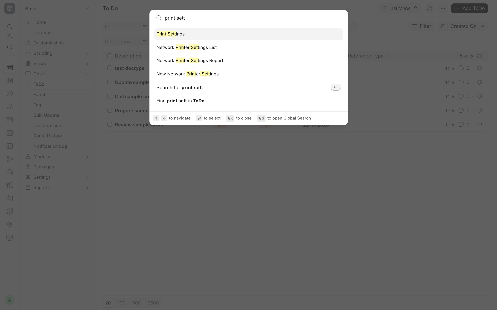

How Settings Work¶
A settings page in Frappe is a Single DocType. A Single DocType has exactly one record, and the record has the same name as the DocType. For example, the one record of System Settings is named System Settings. Use this page to find a settings page, to know when a change takes effect, and to read or build settings in an app.
Single DocTypes and tabSingles¶
A DocType with Is Single (issingle) set has no table of its own. Frappe stores its values in the shared table tabSingles. Each value is one row with the columns doctype, field and value. All values are stored as text and cast to the field type when you read them.
- A Single DocType cannot be submittable, importable or renamed. Frappe clears these flags when you save the DocType.
- Until you save a Single for the first time,
tabSingleshas no rows for it. See Defaults of a Single. - The desk opens a Single as a form, not as a list.
Open a settings page¶
Each Single has a desk route /desk/<slug>. The slug is the DocType name in lowercase, with hyphens for spaces. For example, System Settings opens at /desk/system-settings.
You can also use the awesomebar:
- Press Ctrl+K.
- Type part of the name, for example
print sett. - Select the settings page in the results.

Who can edit¶
The permission rules on each DocType control who can open and save it. In Frappe, the System Manager role can read and write all settings DocTypes, except the website settings. The Website Manager role writes Website Settings, Portal Settings, Contact Us Settings, About Us Settings and Website Script. See the table in Settings DocTypes in Frappe.
Some controllers check the role again. For example, the System Settings form loads its values through frappe.core.doctype.system_settings.system_settings.load, which throws PermissionError for users without System Manager.
When a change takes effect¶
A change in a settings form takes effect at different times on the server and in the browser.
| Where | When the new value is used |
|---|---|
Server code that reads the document (frappe.get_cached_doc, frappe.get_single_value, frappe.get_system_settings) |
On the next request after the save. Save clears the document cache. |
Server code that reads a global default (frappe.db.get_default) |
On the next request, if the controller copies the value to the defaults. System Settings does this. |
Desk JavaScript that reads frappe.boot |
After the user reloads the page. The boot data loads once per page load. |
How the cache is cleared:
Document.save()callsclear_cache()afteron_update. This runsfrappe.clear_document_cache(doctype, name). It removes the document from Redis and fromfrappe.db.value_cache.frappe.db.set_single_value()also callsfrappe.clear_document_cache().- When you save
System Settings,on_updatewrites each changed value as a global default withfrappe.db.set_default. A changed global default clears the full site cache, including the cached boot data of all users (bootinfo). - After you save
System Settingswith a changed Language or Rounding Method, the form reloads the page.
Note
Other users keep the old boot data in their open browser tabs. They see the change after they reload the page.
Read and write settings in Python¶
| Function | Returns | Cache | Notes |
|---|---|---|---|
frappe.get_single(doctype) |
Document |
No | Same as frappe.get_doc(doctype, doctype). Applies field defaults if the Single was never saved. |
frappe.get_cached_doc(doctype) |
Document |
Redis, 1 hour | Use for frequent reads. Do not change and save the returned object. |
frappe.get_single_value(doctype, fieldname) |
value | Redis, through get_cached_doc |
Use for frequent reads of one value. |
frappe.db.get_single_value(doctype, fieldname, cache=True) |
value cast to the field type | Per request (frappe.db.value_cache) |
Reads tabSingles directly. Does not apply field defaults. |
frappe.db.get_singles_dict(doctype, cast=False) |
frappe._dict of all values |
No | Pass cast=True to cast values to field types. |
frappe.db.set_single_value(doctype, fieldname, value) |
None |
Clears document cache | Pass a dict as fieldname to set many values. Skips validation, controller methods and permissions. |
frappe.get_system_settings(key) |
value | Client cache and frappe.local for the request |
Only for System Settings. |
# Read
date_format = frappe.get_system_settings("date_format")
backup_limit = frappe.db.get_single_value("System Settings", "backup_limit") # int
print_settings = frappe.get_cached_doc("Print Settings")
# Write with validation and controller methods
settings = frappe.get_single("Sample Settings")
settings.page_limit = 20
settings.save()
# Write without validation and controller methods
frappe.db.set_single_value("Sample Settings", {"page_limit": 20, "enable_feature": 1})
Warning
frappe.db.set_single_value("System Settings", ...) does not run on_update. The global default is not updated, so frappe.boot.sysdefaults and frappe.db.get_default() keep the old value. Use doc.save() when the value must reach the desk.
Read settings in JavaScript¶
The desk gets some settings in frappe.boot when the page loads.
| Key | Content |
|---|---|
frappe.boot.sysdefaults |
Global defaults, from frappe.defaults.get_defaults(). Includes the System Settings values that were saved in the form. The user's own defaults override them. |
frappe.sys_defaults |
Same object as frappe.boot.sysdefaults. Set in frappe/public/js/frappe/desk.js. |
frappe.boot.time_zone |
{system, user} time zones. |
frappe.boot.navbar_settings |
Values of Navbar Settings. |
// Values loaded at boot
frappe.boot.sysdefaults.date_format; // "dd-mm-yyyy"
frappe.defaults.get_default("date_format"); // reads frappe.sys_defaults
frappe.defaults.is_enabled("hide_empty_read_only_fields"); // true if the value is 1
// Value read from the server on demand. Needs read permission on the DocType.
const time_zone = await frappe.db.get_single_value("System Settings", "time_zone");
frappe.db.get_single_value calls frappe.client.get_single_value. That method uses frappe.read_doc, so the user needs read permission on the settings DocType. Most settings DocTypes allow read only to System Manager. To give a value to all desk users, add it to the boot data from your app. See Build your own settings DocType.
Defaults of a Single¶
A field default in the DocType JSON is applied only when the Single has no rows in tabSingles. This was checked on a temporary Single with a Check field (default 1) and an Int field (default 50):
| Read | Before the first save | After a field is added to a saved Single |
|---|---|---|
frappe.get_single() |
1 and 50 (defaults applied) | None for the new field |
frappe.db.get_single_value() |
0 and 0 | 0 for the new field |
Because of this, code in Frappe usually adds a fallback when it reads a value, for example frappe.get_system_settings("email_retry_limit") or 3. Do the same in your app, or set the value in a patch.
Set values from an app¶
| Method | Use it for | Notes |
|---|---|---|
after_install hook |
Initial values when your app is installed | Runs once per site. |
Patch in patches.txt |
Values for a new field on sites that already have the app | Runs once per site at bench migrate. |
| Fixture of a Single | Not recommended for settings | The whole document is imported again at each bench migrate. Values that a user changed on the site are overwritten. |
Fixture of Property Setter |
Change a field property of a Single, for example hidden or default |
Changes the form, not the stored value. |
# sample_app/hooks.py
after_install = "sample_app.install.after_install"
# sample_app/install.py
import frappe
def after_install():
settings = frappe.get_single("Sample Settings")
settings.page_limit = 50
settings.save()
To change a setting of another DocType, such as System Settings, use doc.save() so that its controller runs. See Fixtures and Patches and Hooks.
Change the settings form¶
- Customize Form does not accept Single DocTypes. It throws "Single DocTypes cannot be customized.", and its DocType picker hides Singles.
- The DocType picker of the Custom Field form also hides Singles. From code,
create_custom_fields()adds a field to a Single. This was checked on a temporary Single. - A Client Script or a
doctype_jshook works on a Single form like on any other form.
Build your own settings DocType¶
- Create a DocType in your app module and set Is Single.
- Add the fields. Give each field a default, and also use a fallback in code.
- Set the permissions. Give write access to
System Manageror to an app manager role. - Add validation in the controller.
- Read values with
frappe.get_single_value()orfrappe.get_cached_doc().
# sample_app/sample_app/doctype/sample_settings/sample_settings.py
import frappe
from frappe.model.document import Document
class SampleSettings(Document):
def validate(self):
if self.page_limit and self.page_limit > 500:
frappe.throw(frappe._("Page Limit cannot be more than 500"))
def on_update(self):
# Only needed for values that you cache yourself
frappe.cache.delete_value("sample_app:derived_limits")
def get_page_limit() -> int:
return frappe.get_single_value("Sample Settings", "page_limit") or 50
Document.save() clears the document cache of the Single for you. Clear only the caches that you build from the values.
To send a value to the desk of every user, use the extend_bootinfo hook. Frappe runs it on each desk load. The boot_session hook runs inside get_bootinfo(), and its result is cached per user in bootinfo until the cache is cleared.
# sample_app/hooks.py
extend_bootinfo = ["sample_app.boot.extend_bootinfo"]
# sample_app/boot.py
import frappe
def extend_bootinfo(bootinfo):
bootinfo.sample_page_limit = frappe.get_single_value("Sample Settings", "page_limit") or 50
// read it in the desk
frappe.boot.sample_page_limit;
Settings DocTypes in Frappe¶
| DocType | Module | Route | Write role | Covered in |
|---|---|---|---|---|
System Settings |
Core | /desk/system-settings |
System Manager | System Settings |
Security Settings |
Core | /desk/security-settings |
System Manager | Security Settings |
Session Default Settings |
Core | /desk/session-default-settings |
System Manager | Security Settings |
Log Settings |
Core | /desk/log-settings |
System Manager | Security Settings |
Navbar Settings |
Core | /desk/navbar-settings |
System Manager | Desk Settings |
Domain Settings |
Core | /desk/domain-settings |
System Manager | Desk Settings |
Document Naming Settings |
Core | /desk/document-naming-settings |
System Manager | Desk Settings |
Desktop Settings |
Desk | /desk/desktop-settings |
System Manager | Desk Settings |
Global Search Settings |
Desk | /desk/global-search-settings |
System Manager | Desk Settings |
SMS Settings |
Core | /desk/sms-settings |
System Manager | Integration Settings |
Website Settings |
Website | /desk/website-settings |
Website Manager | Website Settings |
Portal Settings |
Website | /desk/portal-settings |
Website Manager | Website Settings |
Contact Us Settings |
Website | /desk/contact-us-settings |
Website Manager | Website Settings |
About Us Settings |
Website | /desk/about-us-settings |
Website Manager | Website Settings |
Website Script |
Website | /desk/website-script |
Website Manager | Website Settings |
Print Settings |
Printing | /desk/print-settings |
System Manager | Print Settings |
OAuth Provider Settings |
Integrations | /desk/oauth-provider-settings |
System Manager | Integration Settings |
OAuth Settings |
Integrations | /desk/oauth-settings |
System Manager | Integration Settings |
LDAP Settings |
Integrations | /desk/ldap-settings |
System Manager | Integration Settings |
Push Notification Settings |
Integrations | /desk/push-notification-settings |
System Manager | Integration Settings |
Geolocation Settings |
Integrations | /desk/geolocation-settings |
System Manager | Integration Settings |
Google Settings |
Integrations | /desk/google-settings |
System Manager | Integration Settings |
Automation Settings |
Automation | /desk/automation-settings |
System Manager | Automation and AI Settings |
Flow Settings |
Flow | /desk/flow-settings |
System Manager | Automation and AI Settings |
Flow Knowledge Settings |
Flow | /desk/flow-knowledge-settings |
System Manager | Automation and AI Settings |
Studio Settings |
Studio | /desk/studio-settings |
System Manager | Automation and AI Settings |
Notification Settings is not a Single. Each user has one record. See Desk Settings.
Frappe also has Single DocTypes that are tools, not settings: Customize Form, Bulk Update, Data Export, Audit Trail, Permission Inspector, Role Permission for Page and Report, Installed Applications, System Console and System Health Report.
Pitfalls¶
frappe.db.get_single_value()returns 0 or an empty string for a field that was never saved. It does not use the field default.frappe.db.set_single_value()skips validation andon_update. ForSystem Settings, the desk does not see the new value.frappe.get_cached_doc()returns a shared cached object. Do not change it. Usefrappe.get_single()to change and save.- A fixture of a Single overwrites the values on each
bench migrate. - Open browser tabs keep the old
frappe.bootvalues until the user reloads the page.